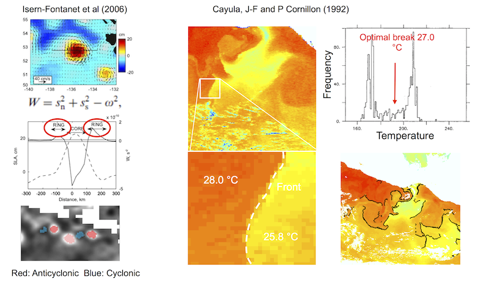
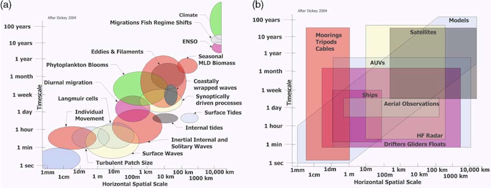
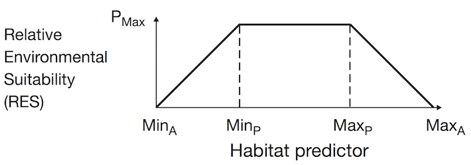
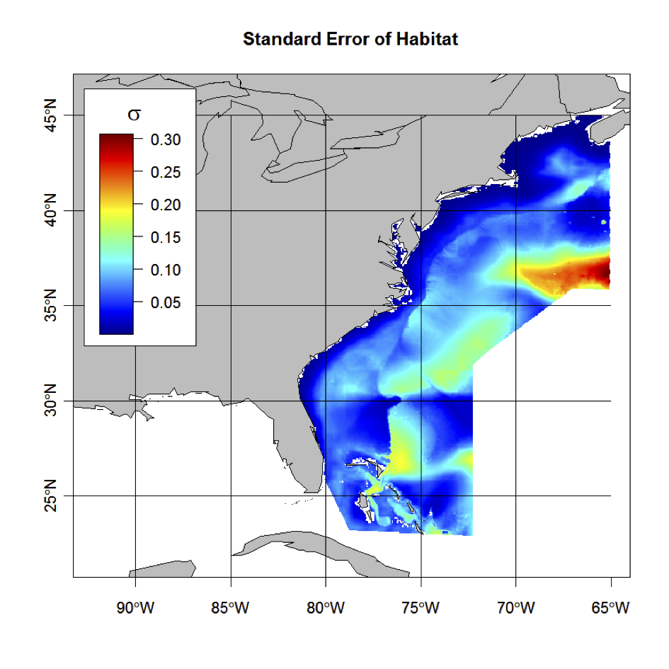
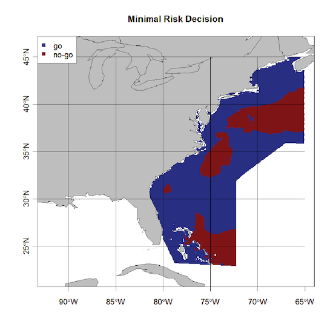

human uses vs. endangered species

2014-09-21
human uses vs. endangered species


How to combine data from many platforms to best predict distribution and abundance of species? (disperate data)
How do these distributions change over time, seasonally and trending with climate change? (distributions and time)
What environmental covariates best predict where and when these animals are distributed? (distributions and environment)
How do we effectively capture and integrate uncertainty for these distributions into decision making? (uncertainty)
Once we can best describe the distribution of these species in space and time, how can we integrate this information into spatial decision frameworks? (decision frameworks)
for siting
for routing
Eddies from AVISO Fronts from Pathfinder / GHRSST

Hybrid Coordinate Ocean Model (HYCOM)
using ROMS to Oct, Nov (predicting from July)
Processes Observations


Eubalaena glacialis

Relative Environmental Suitability

Species status based on extinction risk and species richness based on range maps from IUCN and AquaMaps (Selig et al., 2013).
Combine:
\(Y\): Occurrences for presence-only observation
\(R\): Range map from expert opinion
\(E\): "Effort"" proxy from all "Cetacea" occurrences
…

Combine:
…
Environment:
\(sst\): sea-surface temperature
\(depth\): bathymetric depth
\(d2shore\): distance to shore

\[ \operatorname{p}(\boldsymbol{\lambda}, \boldsymbol{\beta}, \sigma^2, z | \boldsymbol{y}, \boldsymbol{W}, \boldsymbol{E}, \boldsymbol{R}) \alpha \\ \operatorname{Pois}(\boldsymbol{y}, \boldsymbol{E} \boldsymbol{\lambda}) \\ \operatorname{N_5}(\operatorname{ln} \boldsymbol{\lambda}, \boldsymbol{W} \boldsymbol{\beta}, \sigma^2 \boldsymbol{I_5}) \\ \operatorname{Bin}(\boldsymbol{R} │ 1, 1 - exp(-z \boldsymbol{\lambda}) )^{.5} \\ \operatorname{N_5}(\boldsymbol{\beta} │ \boldsymbol{\beta}_p, \boldsymbol{V}_p ) \\ \operatorname{IG}(\sigma^2 │ s_1, s_2) \]
prior densities:
hyperparameters:


| decision | p(0-0.5) | p(0.5-1) |
|---|---|---|
| go | 0 | 3 |
| no go | 1 | 0 |
Weights associating a decided action with the integrated probability of encounter as a simple step function.
| decision | p(0-0.5) | p(0.5-1) |
|---|---|---|
| go | 0 | 3 |
| no go | 1 | 0 |

Per pixel, choose decision which minimizes risk-loss function.


Whale areas (left) and proposed routes (right) in BC.
Using density spatial models for 9 marine mammal species in BC from Raincoast surveys 2004-2008
Composite risk map derived per pixel (\(i\)) across \(n\) species (\(s\)) by summing relative density (\(z_i\)), which is based on the pixel values' (\(x_i\)) deviation (\(\sigma_s\)) from mean density (\(\mu_s\)), and multiplying by conservation status (\(w_s\)): \[ z_{i,s} = \frac{ x_{i,s} - \mu_s }{ \sigma_s } \\ Z_i = \frac{ \sum_{s=1}^{n} z_{i,s} w_s }{ n } \]


Boston Harbor Rerouting for Right Whales 
Global Traffic 
…
…